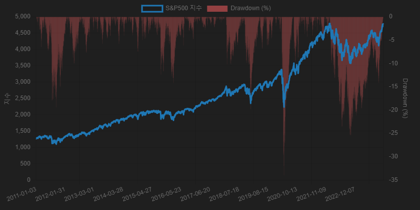
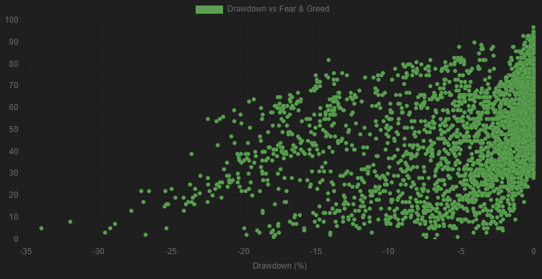
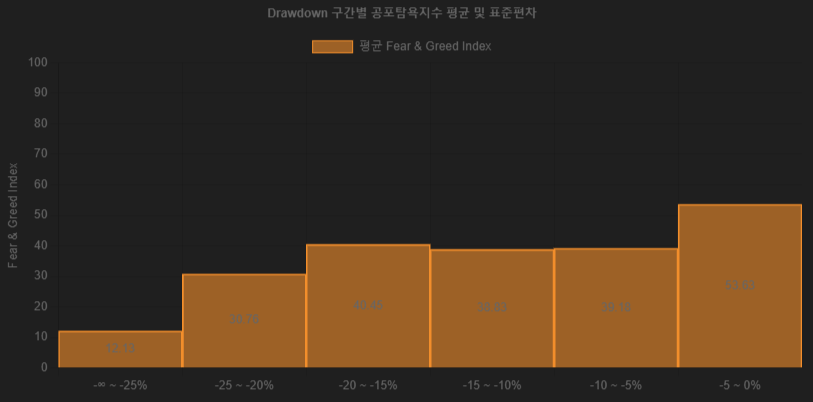
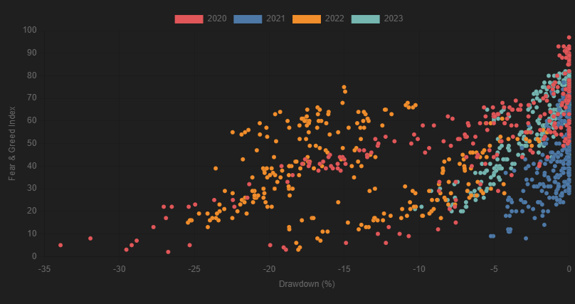

본 리포트는 2011년부터 2023년까지의 S&P500 주가 흐름과 CNN의 Fear & Greed Index 데이터를 바탕으로, 시장 하락폭(Drawdown)과 투자 심리 지표 간의 상관관계를 분석합니다.
Drawdown은 주가가 이전 고점 대비 얼마나 하락했는지를 백분율로 나타낸 지표로, 투자자가 경험하는 잠재적 손실을 측정하는 데 유용합니다. 아래 차트는 2011년부터 2023년까지의 S&P500 지수 및 해당 기간의 drawdown 변화를 시각화한 것입니다.
Fear & Greed Index는 CNN에서 제공하는 심리 지표로, 0은 극단적 공포, 100은 극단적 탐욕을 의미합니다. 이 지표는 주가 모멘텀, 변동성, 안전자산 수요, 주식 수요 등 다양한 하위 요소를 종합하여 산출됩니다.
전체 기간 동안의 drawdown과 Fear & Greed Index 간의 관계는 아래 산점도로 나타낼 수 있습니다. 대체로 하락폭이 클수록 시장의 심리 상태는 공포 쪽으로 기울며, 약한 하락에서는 탐욕 성향도 함께 관찰됩니다.
이를 정량화하기 위해 drawdown을 구간별로 나누어 해당 구간의 공포탐욕지수 평균을 계산한 결과는 다음과 같습니다.
다음은 최근 4년(2020~2023) 동안의 drawdown과 공포탐욕지수 간 관계를 연도별로 나눈 산점도입니다. 각 연도는 고유한 색상으로 표시되며, 시기별 시장 심리의 민감도를 확인할 수 있습니다.
본 분석은 투자자가 시장 하락기에 객관적 심리 지표를 참고하여 감정적 의사결정을 완화하는 데 활용될 수 있으며, 리스크 관리를 위한 심리 기반 모델 설계에도 적용 가능합니다.